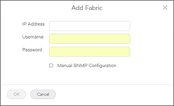
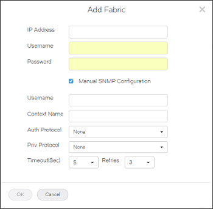

Discovering a Fabric¶
You must discover a fabric before you can monitor and manage it.
- Before you can discover a fabric, you must have the following:
- SAN-Discover Setup privilege with read/write permission
- IP address and login credentials for the seed switch
Use the following procedure to discover a fabric.
Click the Settings icon (
), and then select Network Monitoring > Fabric Discovery.

The Discovered Fabrics page displays all fabrics that have been discovered.
Click the Add Fabric (
) button in the top right corner of the page.

Enter the IP address, username, and password of the seed switch in the Add Fabric dialog box.
The IP address can be in IPv4 or IPv6 format.
If you want to manually enter the SNMP configuration parameters, select Manual SNMP Configuration and enter the information in the dialog box.
By default, SNMPv3 is automatically selected and configured.
Click OK.
If the seed switch is enabled with Virtual Fabrics and has more than one logical switch, you must select which logical fabrics to discover.
The Add Fabric dialog box display a list of the logical switches configured on the seed switch. Each logical switch corresponds to a logical fabric, indicated by the fabric ID (FID). The Name is the logical switch name, not the logical fabric name.
The dialog box displays only the logical switches that have not yet been discovered.

- Select one or more logical fabrics to discover.
- Click OK.
The Discovered Fabrics page displays with the newly discovered fabrics listed.
Click the fabric name to open the drill-down page, where you can change the fabric name and view a list of switches in the fabric.